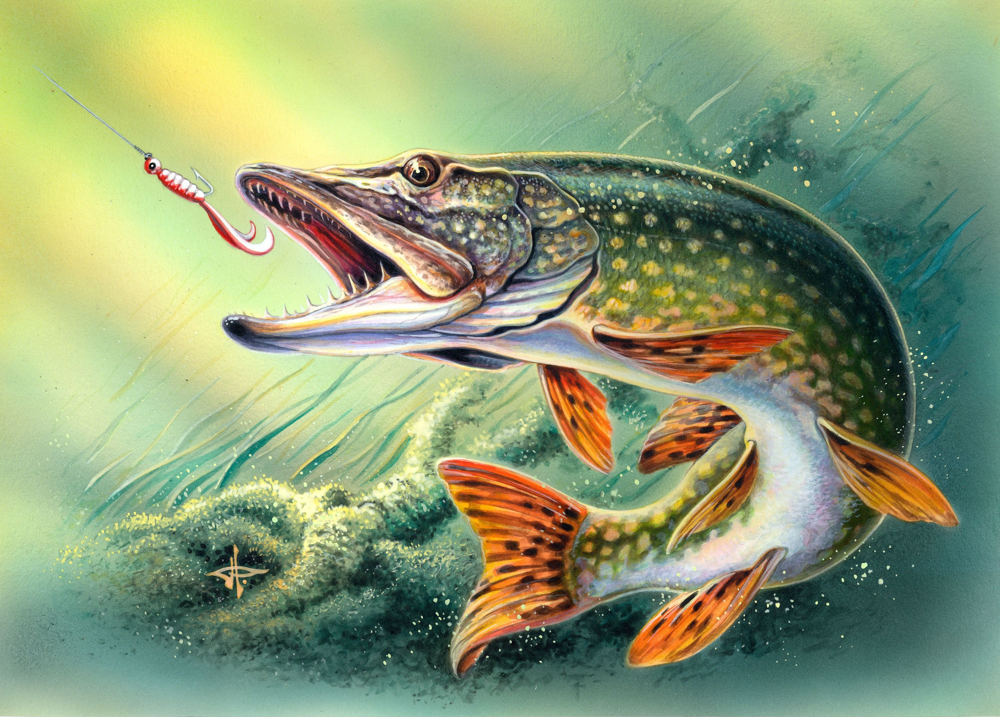
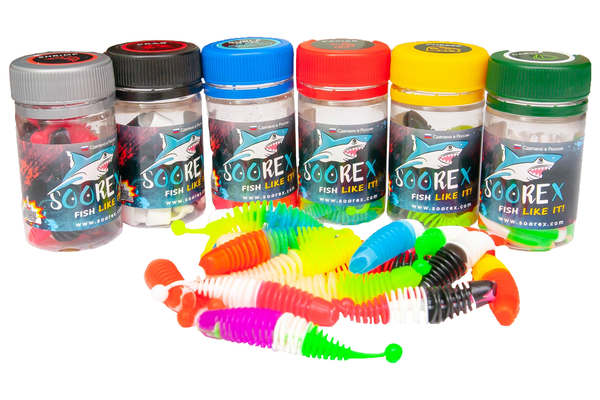
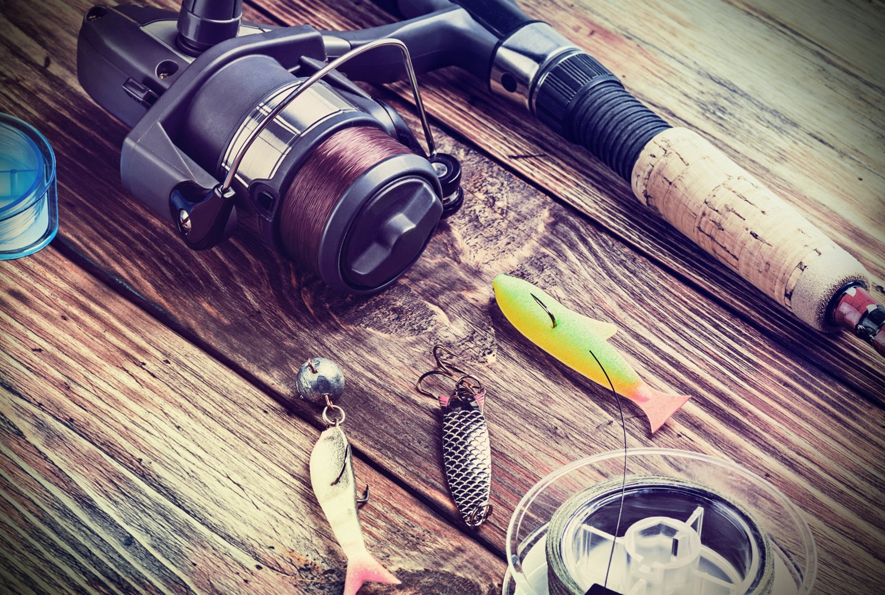

Поход на щуку
Дата: 13 Мая 2020 | Автор: Михаил Одним из самых популярных объектов охоты спиннингистов является щука. У начинающих рыболовов она вызывает наибольший интерес. Ведь даже в небольших реках и озерах можно поймать крупную зубастую хищницу. Но спиннинговая ловля щуки имеет много важных моментов.
Ловля больших окуней
Дата: 24 Мая 2020 | Автор: Денис
Окунь является самым распространенным хищником в наших реках и водоемах. Он относится к одноименному семейству окуневых и к отряду окунеобразных. Полосатого разбойника отличает стайный образ жизни и необычайная жадность.
Уловистые приманки этого сезона
Дата: 5 Июня 2020 | Автор: Андрей В спиннинговой ловле существует огромное количество направлений. На рыболовном рынке можно встретить широкий выбор как специализированных, так и универсальных снастей для ловли хищников в различных водоемах. Ни одна спиннинговая рыбалка не обойдется без приманок, их в продаже имеется огромное множество. Один из самых распространенных типов приманок - воблер.
Надежные оснастки
Дата: 15 Июня 2020 | Автор: Сергей Механизм, который крепится к концу лески, называется терминал снасти. Это включает в себя крючки, лидеры, вертлюги, грузила, поплавки, разрезные кольца и провод, защелки, бусинки, ложки, ножи, блесну и вилок для крепления спиннера лезвий рыболовных приманок. Иногда термин рыболовное снаряжение используется для законченного монтажа снастей готовы для рыбалки. Рыболовные снасти можно сравнить с методами рыбной ловли . Удочка относится к физическому оборудованию, которое используется при ловле, в то время как методы рыбалки относится к форме , в которой снасть используются при ловле.